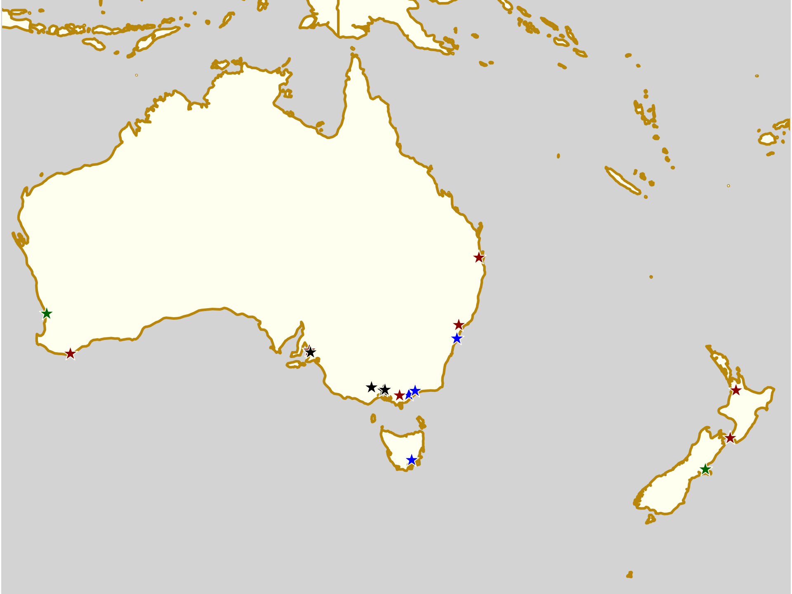
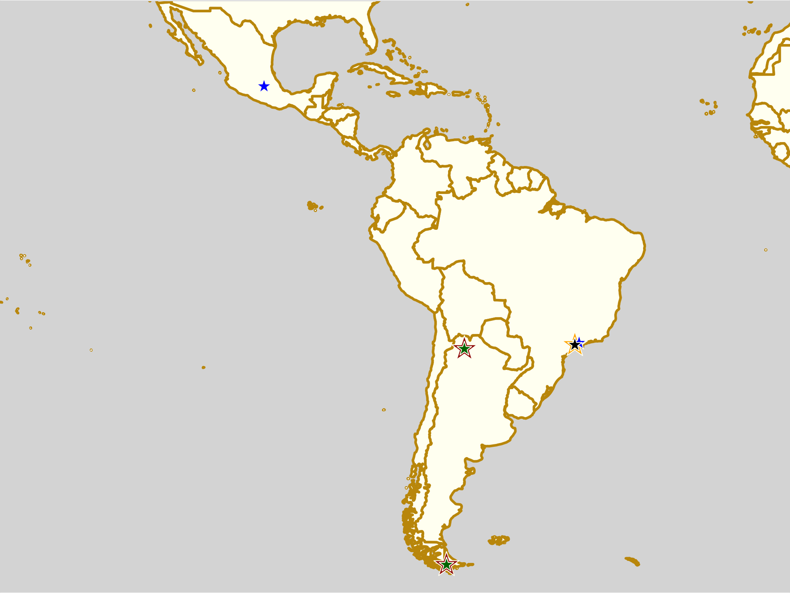

Non-US/Canadian Derby Roundup: 18th/19th August Edition
We’re bringing you another roundup of the upcoming Roller Derby this weekend from across the world. As always, we’re using Flat Track Stats for much of this information – for regions with less good coverage, we also do a bit of intensive searching using a tool which scans the Facebook events of Roller Derby leagues known to Derby Listing.

Predictions of bouts are from FTS, if possible, and from our own SRD Rank where FTS cannot make predictions (for example: Latin America, or non-MRDA men’s bouts). (SRDRank also has recent WFTDA rankings, including the 31st June ranking, as well as SRDRank, and allows you to make predictions from them.)
If we’ve missed you from our roundup, please let us know! [Or add yourselves to FTS and/or Derbylisting]
(Note: we're especially likely to be missing items this week, as Facebook's response to the Cambridge Analytica scandal has resulted in them turning off large parts of the services we use to automatically collate events for this article. We don't think we've missed too much, but...)We're trying a new colour coding this week, to differentiate BOUTS from RECRUITMENTS and OPEN SCRIMs, and BOOTCAMPs.

Scotland
This weekend is one of the busiest in Scottish Derby scheduling, with no less than three events, one a double header, across the country this Saturday (and another team off raising money for Charity)!- Thurs, Dumbarton: Chicks in Bowls Scotland host Quad Meet sessions [6-10pm, Unit23 Skatepark]
- Edinburgh: Auld Reekie Roller Girls' traditional Edinburgh Festival Fringe fixture is a double header of action for the A and C teams [EVENT]
-
Grangemouth: Bairn City Rollers host a naturally animal themed single-header as Aberdeen's Granite City travel down to play them. [EVENT]
- Central Belters (Bairn City / Stirling+Falkirk A) versus Fight Hawks (Granite City / Aberdeen B) [FTS]
- Inchture: Fair City Rollers of Perth are one of several groups to have teams competing in the Rainbow Assault assault course, for the charity CLIC Sargent! [EVENT]
-
Inverness: Inverness City Roller Derby host a bit of history with a single-header, as they're playing Orkney ViQueens in the latters' first ever public bout! [EVENT]
- Inverness City "Nasty Nessies" (Inverness A) versus Orkney ViQueens [FTS]
- Sun, Dumbarton: Chicks in Bowls Scotland host all-ages coaching for Ramps and Bowls skating [10am-midday, Unit23 Skatepark]
- Tues, Aberdeen: Chicks in Bowls Scotland host a regular Quad Meet (Transition Extreme) [EVENT]
United Kingdom
The MRDA European Qualifiers appear to have sucked most of the attention in the UK as a whole their way. (If you're more interested in high level WFTDA derby, though, then London have a treat for you.)- Fri, Middlesbrough, England: Middlesbrough Roller Derby host their regular open WFTDA-gender-policy scrimmage [EVENT]
-
Halifax, England: New Wheeled Order host the 2018 Men's Roller Derby Association European Qualifiers. (They're already qualified, but will be playing a bonus game themselves) [FTS Tournament][EVENT]
- Competing teams:
- Lincolnshire Rolling Thunder
- Tyne and Fear Roller Derby (Newcastle Upon Tyne)
- Barrow Infernos (Barrow-in-Furness)
- Nottingham Roller Derby's Super Smash Brollers
- Manneken Beasts (Brussels)
- New Wheeled Order (Manchester M) versus Gents In Pink (UK open team) [FTS] (bonus bout)
- Team Avalanche versus Team Tornado (Junior Roller Derby Exhib)
- Competing teams:
-
London, England: London Rollergirls host an "advance preview" of their first expected matchup at WFTDA Playoffs in Atlanta... bringing Berlin's Bear City to the considerably closer Tottenham Court Road. [EVENT]
- London Brawling (London A) versus Bear City A (Berlin A) [FTS]
- Sat-Sun, York, England: York Minxters Roller Derby host a Training Clinic by Miracle Whips (Montreal Roller Derby / Team Canada Roller Derby)! This is a two-day course, with beginners sessions in the first day, and advance in the second. (Intermediate skaters welcome to both). [EVENT]
- Sun, Blackpool, England: Blackpool Roller Derby host a "taster session" for potential recruits wanting to try Roller Derby [EVENT]
- Sun, Liverpool, England: Liverpool Roller Birds host their summer open scrim (open to WFTDA-gender-policy conforming skaters) [EVENT]
- Sun, Northwich, England: North Cheshire Victory Rollers are hosting an open-to-all intake event for interested new members. [EVENT]
-
Sun, Rochester, England: The Apex Predators host a double header of roller derby action [EVENT]CANCELLEDApex Predators (Rochester/Kent) versus Team Unicorn (South of England exhib)Open To All Scrim
- Mon, Bridgend, Wales: Bridgend Roller Derby host an 80s themed Roller Disco / rec skate event [EVENT]
- Wed, Sunderland, England: Sunderland Roller Derby League host another of their weekly open taster session for potential new skaters [EVENT]
Europe
Europe as a whole is also pretty quiet, except for the large number of recruitment events. There's still some on-track action - especially up in Scandinavia, and in the south of Ireland.- Thurs+Mon, Nice, France: Nice Roller Derby's continuing series of open sessions for potential recruits has its next fixture today [EVENT]
- Fri-Sat, Lucerne, Switzerland: Rhine Rebels of Basel are inviting Swiss (and other) Roller derby teams to meet up at the femwo feminist political weekend to discuss building a queer-feminist network in Swiss Roller Derby, and beyond [femwo EVENT][Post by Rhine Rebels]
- Odense, Denmark: O-Town Roller Derby host an open summer scrimmage, with Veterans and Rookies scrims. [EVENT]
- Sat+Wed, Bordeaux, France: Roller Derby Bordeaux' Summer Sessions open-tryouts and recruitments continue! [EVENT]
- Sat+Wed, Lille, France: Lille Roller Girls' ongoing open tryouts and recruitment series continues, for all interested potential members [EVENT]
- Berlin, Germany: Bear City Roller Derby's Beginners Class is already in its second session! [EVENT]
- Oberhausen, Germany: The Mine Monsters of Oberhausen are hosting their "Become a Monster" recruitment day for skaters or officials [EVENT]
-
Cork, Ireland: Cork City Firebirds host a single header with Dublin's newly reformed team (and a bit of help from Waterford's Viqueens) [EVENT]
- Cork City Firebirds versus Dublin Roller Derby "Fear City" [FTS]
-
Malmö, Sweden: Crime City Rollers host Stockholm's finest, for a battle of the top two teams in Sweden! [EVENT]
- Crime City Rollers (Malmö A) versus Stockholm Roller Derby A [FTS]
- Örebro, Sweden: Örebro Roller Derby have a stall at the Örebro City Sport Festival, promoting the sport and their league! [EVENT]
- Stockholm, Sweden: The Royal Swedish Roller Derby host a triple header of Roller Derby! [EVENT]
- Sun + Wed, Châteauneuf-de-Gadagne, France: The Rabbit Skulls of Avignon's open recruitment / try derby sessions continue! [EVENT]
- Sun, Pâquier, France: the Brütales Deluxe of Annecy-Seynod are hosting the first of two "try derby" recruitment days. Kit provided if needed. [EVENT Flyer]
- Sun, Paris, France: Paris Rollergirls host the last session of their discover roller derby recruitment sessions for this block [EVENT]
- Sun, Cologne, Germany: Cologne Roller Derby host an open training session for potential new recruits to try out the sport [EVENT]
- Tues, Angoulême, France: Brain Damage, Roller Derby Angoulême, host their next, and last, recruiting 'try out' session on this year's schedule [EVENT]
- Tues (+Thurs), Marseille, France: Marseille Roller Derby Club host the start of their new season for MRDC with 4 mixed off-and-on skates sessions. Registration forms for the league also available. [EVENT]
- Tues, Rovaniemi, Finland: Rovaniemi Roller Derby host the start of their beginners course for potential new skaters (sign up in advance)! [EVENT]
- Wed, Tampere, Finland: Tampere Roller Derby + Tampere Rollin Bros co-host the first of their two Open Skate intro to derby sessions (recruitment starts in October). [EVENT]
- Wed, Zaragoza, Spain: Sicarias del Cierzo host another of their open "Wednesroller" skate sessions, also for anyone who wants to join their team and try out stuff. [EVENT]

Pacific
Australia and New Zealand, by contrast, are keeping their autumn/winter season busy, with a large number of bouts across both countries. The 5x5 Roller Derby Tournament is hosting its finals for both tiers this weekend; and the Open Season continues rolling on as well! We'd also like to call out Gippsland Ranges Roller Derby's return to hosting games on Saturday, too! Congratulations!- Thurs, Sydney, NSW, Australia: University of Sydney Roller Derby League host their second intake of the season [EVENT]
- Fri, North Hobart, TAS, Australia: south Island Sirens Roller Derby League's Beginners Programme begins, for new skaters. [EVENT]
- Fri, Bairnsdale, VIC, Australia: Gippsland Lakes Roller Derby continue their Roller Derby High intro to Roller Derby series, for girls 13 to 17 [EVENT]
- Fri, Preston, VIC, Australia: Victorian Roller Derby League host another of their regular Social Skates [EVENT]
-
Cessnock, NSW, Australia: Maitland Roller Derby hosts the Grand Final of this years' 5x5 Roller Derby Championship! [FTS Tournament][EVENT]
- Western Sydney Rollers versus Hawkesbury/Hills Area Roller Derby (3rd Place BATTLEGROUNDS tier)
- Central Coast Roller Derby United (Niagara Park) versus Blue Mountains (Katoomba) (3rd Place ARMAGEDDON tier)
- Varsity Derby League versus South Side Derby Dolls (1st Place BATTLEGROUNDS tier)
- Newcastle Roller Derby League versus Inner West Roller Derby (1st Place ARMAGEDDON tier)
-
Mansfield, QLD, Australia: The 6th Round of the Roller Derby Open Season is rolling around, with another 6 games in one day! [FTS Tournament][EVENT]
- Cherry Bombs (Northern Brisbane Rollers) versus Rumble Bees (Sun State Roller Derby) [Div 1]
- East Coast Derby Dolls versus Violet Femmes (Brisbane City Rollers) [Div 2]
- Black Hearts (Northern Brisbane Rollers) versus Ninja Stars (Coastal Assassins Roller Derby) [Div 2]
- Punk Blockers (Brisbane City Rollers) versus Zombees (Sun State Roller Derby) [Div 1]
- Banshees (Brisbane City Rollers) versus Valley Valkyries (Tweed Valley Rollers) [Div 2]
- Adelaide, SA, Australia: Adelaide Roller Derby host a fundraising Quiz Night, with a theme of "I can't believe I wore that!". [EVENT]
-
Osborne, SA, Australia: Light City Derby and Rockabellas Roller Derby League co-host their next Home Teams bouts [EVENT][EVENT] (both leagues have separate events for this...)
- Toxic Cherries versus Doomsday Rollers (Rockabellas home teams)
- Regimental Rollers versus Galactic Guardians (Light City home teams)
- Ballarat, VIC, Australia: Ballarat Roller Derby Association co-host a "Fun Skate" open skating event with Ballarat YMCA [EVENT]
-
Moe, VIC, Australia: Gippsland Ranges Roller Derby host an "old school" bout, with Mornington Peninsula Roller Derby Club. This is a culmination of a lot of work for both leagues, rebuilding and developing to this point (as part, also of Team Regional Victoria). [EVENT]
- Gippsland "Power Ranges" versus Mornington Peninsula "Penny Dreadfuls" [FTS]
- West Footscray, VIC, Australia: WestSide Derby Dollz host their Annual General Meeting for 2018, including the committee elections for the next season. [EVENT]
-
Albany, WA, Australia: Albany Roller Derby League hosts a single header bout [EVENT]
- Albany Roller Derby League A versus Bunbury Roller Derby [FTS]
-
Hamilton, New Zealand: Hellmilton Roller Ghouls host round 2 of their home teams series [EVENT Flyer]
- Gang Green versus Ultra Violent
-
Wellington, New Zealand: Richter City Roller Derby host a double header, including their home teams final [EVENT]
- Junior Derby Exhibition bout
- Comic Slams versus Smash Malice (home teams final)
- Sun, Sydney, NSW, Australia: South Side Derby Dolls host an Info Day for potential new recruits, ahead of actual recruitment in September [EVENT]
- Sun, Perth, WA, Australia: Perth Roller Derby host a "Fresh Meat Skills" bootcamp, aimed at helping newer skaters develop critical skills. Open To All genders. [EVENT]
- Sun, Christchurch, New Zealand: Dead End Derby are holding their second Junior Derby "Jammer Club" mini-bootcamp [EVENT Flyer]
- Tues, Sale, VIC, Australia: Gippsland Lakes Roller Derby's second location for their intro to Roller Derby series for girls 13-16 has sessions on Mondays. [EVENT]

Latin America
We think we've found all the roller derby in Latin America, this weekend, but there's always a higher chance of us missing things here. Our principal action here is at both extents of Argentina - with the north (Jujuy) and the south (Tierra del Fuego) both seeing big combined bootcamp+multibout/scrimmage events!- Sat-Sun, San Salvador de Jujuy, Argentina: Coquena's Fighter and Mortal Kollas Roller Derby co-host a double header of derby action as part of the below bootcamp. [EVENT]
- Sat:
- Mortal Kollas Roller Derby (Jujuy A) versus The World (open subs team)
- "Men's derby bout"
- Sun
- "Three team round robin" with mixed teams from bootcamp
- Sat:
- Sat-Sun, San Salvador de Jujuy, Argentina: Coquena's Fighter and Mortal Kollas Roller Derby co-host a two-day bootcamp, run by Jose Sanchez. [EVENT]
- Sat+Sun, Ushuaia, Tierra del Fuego: Pirates del Beagle and Bandera Negra co-host a Patagonian roller derby extravaganza [EVENT]
- WFTDA-gender bouts
- MRDA-gender bouts
- OTA bouts
- Sat+Sun, Ushuaia, Tierra del Fuego: Piratas del Beagle and Bandera Negra also co-host a bootcamp as part of the event, run by Pibe, one of Team Argentina Men's star jammers [EVENT Flyer]
- São Paulo, Brazil: Gray City Rebels host an open scrimmage - with contact and no-contact components, for high and low experience skaters [EVENT]
- São Paulo, Brazil: Gray City Rebels are also providing vegan stroganoff? as a fundraising / food for fuelling the scrimmage... (request a bowl in advance!) [EVENT]
- Sat+Sun, Mexico City, Mexico: Burdel Zombie Roller Derby are still holding open recruitment (turn up at their training sessions on weekends) [EVENT Flyer]
- Sun, São José, Brazil: The Bruxas da Ilha start their next season, and invite potential new skaters to their first, open, training session! [EVENT Flyer]
Africa and Middle East
We only know about the ongoing Pretoria-based FunSkates in this region this weekend.
- Thurs, Pretoria, South Africa: P-Town Roller Derby's weekly funskate open-skating events continue, with the chance to meet+sign up with the team [EVENT]
Elsewhere
- Fri-Sun, Kalamazoo, MI, USA: Although there are no non-North American teams involved, it's a big first, so we're mentioning this event here! Kalamazoo Derby Darlins host the first ever North America East WFTDA Continental Cup, WFTDA's new system for encouraging tournament play for non-Playoffs-ranked teams, across the world. [EVENT]